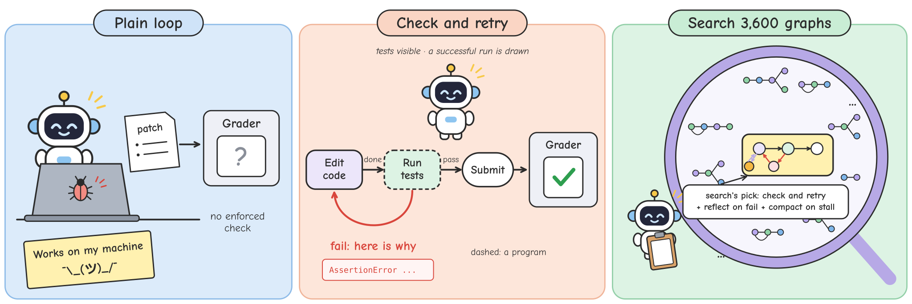

We turn a coding agent's harness into a searchable graph and show that checking supplied tests, returning failure feedback and retrying improves repair success on the tested bug-fixing tasks.
check node). Edges. Each edge is followed on the outcome the node returns (done, pass, fail, context too long, stalled) and carries no data; the conversation, the repository working copy and the latest feedback live in a shared state. The stall edge ⑨ is followed when the repository is still unchanged at step 20 of a visit to the work node, at most once per run. The nine variables ①–⑨ switch nodes on and set the three side loops, which gives 3,600 distinct graphs (section 6).
One task from the study. In the DeepDiff library, comparing two sets reports the wrong direction: items that were added show up as removed, and removed items as added. The agent receives this issue text and the repository with the bug, edits the code with shell commands, and hands in a patch. The patch counts as a repair when the project's grading tests pass.
The harness is the program around the language model. Written as a graph, its nodes perform steps (a stretch of agent conversation, or a program such as a test run) and its edges choose the next step from the outcome the last one returned: the test run returned fail, so go back to editing. Edges carry no data: the conversation, the repository working copy and the latest feedback live in a state that every node reads and writes. Our compiler generates 3,600 graphs that pass static checks; the engine runs any of them, and search decides which ones to run.
Three graphs run through every stage with Qwen3.8-27B: the plain loop, check and retry, and the graph that search and selection returned. The tasks are split into 188 for search, 56 for selection and 232 held out for confirmation, and 900 fresh tasks that combine several defects re-test the selected graph.
| Task set | Tests | Tasks | Plain loop | Check and retry | Selected graph | Check and retry − plain loop [95% interval] | Selected − check and retry [95% interval] |
|---|---|---|---|---|---|---|---|
| Search (one run) | visible | 188 | 72.9% | 81.9% | 82.4% | +9.0 [4.3, 13.8] | +0.5 |
| Selection (two runs) | visible | 56 | 81.3% | 92.0% | 93.8% | +10.7 [3.6, 17.9] | +1.8 [−0.9, 5.4] |
| Held-out confirmation (two runs) | visible | 232 | 84.3% | 90.7% | 91.4% | +6.5 [3.4, 9.7] | +0.6 [−1.3, 2.8] |
| Held-out confirmation (one run) | hidden | 232 | 64.2% | 64.7% | 64.2% | +0.4 [−3.0, 3.9] | −0.4 [−3.9, 3.0] |
| Fresh combined-defect follow-up | visible | 900 | 56.2% | 81.3% | 81.5% | +24.2 [20.9, 27.3] | +0.2 [−1.3, 1.7] |
Main table. Share of bugs repaired by the three graphs on each task set, Qwen3.8-27B with thinking disabled, at most 50 model calls per run. Differences are in percentage points with 95% intervals from paired bootstraps over tasks inside repositories. The search row has one stored run per task; its last cell is a point difference, and the selected graph was returned by search procedures that read these runs. On the follow-up the plain loop ran once per task and the other two graphs twice; the difference to the plain loop uses the first run of each (80.4% for check and retry). The shaded rows are the held-out confirmation.
Visible and hidden tests. In the visible condition the failing tests that the grader uses are in the repository, so the gate runs the grader's own tests. In the hidden condition those test files are removed, and the gate runs what remains. Search and selection used visible tests only. The tasks. SWE-smith injects bugs into real Python repositories, and a language model writes each issue text from the bug patch and the failing tests. Its authors state that the released dataset does not yield instances appropriate for evaluation. We have not validated the issue texts for ambiguity or leakage, or established how faithful these synthetic tasks are to real issues.
The tasks come from SWE-smith: real Python repositories into which a bug has been injected, each with an issue text and grading tests. In the visible condition the failing tests are in the repository, so a test-running node can use them; in the hidden condition they are removed (section 3). In the first study, 17 graphs were written by hand, and after a pilot on 27 development tasks 9 of them ran on 81 confirmation tasks from 9 repositories with two models. Two graphs anchor every comparison on this page (Figure 1).
solve node (the agent edits until it says it is done) has one edge, done → submit. B adds the check node, a program that runs the tests on the current patch, with two edges: pass → submit, and fail → back to solve with the failure output added to the conversation, at most twice.
solid: the node calls the modeldashed: a program, no model callCheck-and-retry raised repairs for both models in the first study.On 81 confirmation tasks with tests visible, repairs went from 75% to 98% for gpt-6.1-terra and from 63% to 77% for gpt-6-luna: +23.5 points (95% interval 14.8 to 32.5; better on 22 tasks, worse on 0) and +13.6 points (7.0 to 20.6; better on 19, worse on 2). It costs 12% and 27% more model calls, and 35% and 60% more tokens (Figure 2).
Check-and-retry had the higher observed repair rate in every comparison of Table 1.With a third model, Qwen3.8-27B with thinking disabled, the lead was +6.5 points (95% interval 3.4 to 9.7) on 232 tasks held out from every search and selection step, and +7.9 points (3.3 to 12.9) on the 120 of them that come from three repositories withheld from search and selection (marshmallow, oauthlib, jinja). On 900 fresh tasks from 15 further repositories it was +24.2 points (20.9 to 27.3). Its interval excludes zero everywhere except on the 80 search tasks new to this project (+3.8 points, −1.3 to 8.8).
| Task set (tests visible) | Model | Tasks | Plain loop | Check and retry | Difference in points [95% interval] | Better / worse |
|---|---|---|---|---|---|---|
| First study, confirmation (three runs per task) | gpt-6.1-terra | 81 | 75% | 98% | +23.5 [14.8, 32.5] | 22 / 0 |
| First study, confirmation (three runs per task) | gpt-6-luna | 81 | 63% | 77% | +13.6 [7.0, 20.6] | 19 / 2 |
| Search tasks, all (one run) | Qwen3.8-27B | 188 | 72.9% | 81.9% | +9.0 [4.3, 13.8] | 22 / 5 |
| of which also used in the first study | Qwen3.8-27B | 108 | 65.7% | 78.7% | +13.0 [5.6, 20.4] | 18 / 4 |
| of which new to this project | Qwen3.8-27B | 80 | 82.5% | 86.3% | +3.8 [−1.3, 8.8] | 4 / 1 |
| Selection tasks (two runs) | Qwen3.8-27B | 56 | 81.3% | 92.0% | +10.7 [3.6, 17.9] | |
| Held-out confirmation (two runs) | Qwen3.8-27B | 232 | 84.3% | 90.7% | +6.5 [3.4, 9.7] | |
| of which from the three withheld repositories | Qwen3.8-27B | 120 | +7.9 [3.3, 12.9] | |||
| Fresh follow-up tasks (first run of each) | Qwen3.8-27B | 900 | 56.2% | 80.4% | +24.2 [20.9, 27.3] |
Table 1. Check-and-retry against the plain loop wherever both were run with tests visible. Rows report comparisons from different studies and task subsets; indented rows are subsets of the nearest preceding unindented row. Intervals are from paired bootstraps over tasks (inside repositories for the Qwen3.8-27B rows). Better / worse counts tasks with a higher / lower repair rate under check-and-retry, after averaging runs within each task.
An enforced check node beat the same checker offered as a tool by +7.4 and +7.4 points.The gains are +7.4 points for gpt-6.1-terra and +7.4 for gpt-6-luna. Handing the model the test checker as a tool it chooses when to call helped the larger model; adding a check node with retries on top of that tool raised repairs further (Table 2, design fixed before these runs). Asking the model to review its own work before submitting changed repairs by +1.3 points for gpt-6.1-terra and +9.0 for gpt-6-luna, less than the enforced check for both (Figure 3).
| Tests visible, 81 tasks, two runs per task | gpt-6.1-terra | gpt-6-luna |
|---|---|---|
| Plain loop | 74.1% | 65.4% |
| Plain loop + checker offered as a tool, with an instruction to use it | 90.1% | 68.5% |
Checker offered as a tool + enforced check node with retries | 97.5% | 75.9% |
| Enforced minus offered, 95% interval | +7.4 [1.9, 13.6] | +7.4 [2.5, 13.0] |
Table 2. Offering the checker versus enforcing it.
check nodegraph does notWith 3,600 graphs to choose from, harness design becomes a search problem: spend a fixed number of agent runs deciding which graph to try on which task, then return one graph (the loop is drawn in Figure 8). With Qwen3.8-27B we split the tasks into 188 for search, 56 for selection and 232 held out for confirmation. Search and selection used visible grading tests; confirmation and the per-task policies were evaluated with both visible and hidden tests. Searches ran on a table of stored results and live; the best candidates were compared on the selection tasks; the winner was frozen and then run on the held-out tasks, which no earlier step had seen.
With grading tests visible, the graph selected by search differed from check-and-retry by +0.6 points on the held-out tasks.It repaired 91.4% against 90.7% (95% interval of the difference −1.3 to 2.8). The held-out tasks are 112 from the eight repositories that also supplied search tasks and 120 from three withheld repositories (2,088 scored runs for the three graphs, visible and hidden). The selected graph was better on 11 tasks and worse on 8, and under the rule fixed before the run the result excludes an improvement of 5 points or more. On the 56 selection tasks, as the best of 14 candidates, it had led by +1.8 points (−0.9 to 5.4). It averaged 20.3 model calls per run against 20.1, and 148,000 against 158,000 tokens.
The selected graph extends check-and-retry with two side paths: find the cause after a failed check; summarize after a stall . Its nodes are solve, check, reflect (the model reads the failure output and writes down the cause) and stall_compact, a compact node (the model replaces the conversation with a summary). Its edges: solve → check on done; check → END, which submits the patch, on pass; check → reflect on fail, then reflect → solve, with at most two retries; solve → stall_compact on stalled (20 steps without an edit), then stall_compact → solve.
On 900 fresh tasks of the kind where it had looked better, the selected graph differed from check-and-retry by +0.2 points.It repaired 81.5% against 81.3% (95% interval of the difference −1.3 to 1.7). SWE-smith builds some tasks by combining several planted defects in one file or one module. A breakdown made after confirmation found the selected graph +6.3 points ahead (95% interval 2.5 to 11.3) on the 40 such tasks among the selection and confirmation tasks; 9 of them were selection tasks. We tested this once on new tasks, with the rules written before any run: 900 tasks (480 combining defects in one file, 420 in one module), 60 from each of 15 repositories no earlier step had used, 4,500 scored runs. The selected graph was better on 80 tasks and worse on 75, the result excludes a gain of 5 points under the pre-set rule, and leaving out any one repository gives a difference between −0.1 and +0.4 points. The selected graph used 3.7% fewer tokens per run (95% interval 1.1% to 6.2% fewer), with similar observed repair rates.
Every live search kept the enforced check: all ten ended on a graph that contains it.Each search starts from the plain loop and proposes a change to one design variable at a time. A step runs the current and the changed graph on the same 16 tasks and keeps the change if the changed graph repairs more of them. Five searches chose the next change at random and as many chose it from the way the last runs had failed; each spent 512 scored agent runs (16 steps). In two searches the first proposal to add the check was rejected before a later one was accepted, and adding it was the first change proposed in two. The ten returned graphs are all different: besides the check, four allow up to three retries, five summarize the conversation past a length threshold, and four remind the agent after a stall (Table 3).
| How the next change was chosen | Search | What the returned graph adds to the plain loop, besides the enforced test check | In the builder |
|---|---|---|---|
| Chosen from how the last runs failed | 1 | up to 3 retries; reminder after a stall | |
| 2 | up to 3 retries; summarize past 16k tokens | ||
| 3 | find the cause after a failed check; up to 3 retries; summarize past 16k tokens; find the cause after a stall | ||
| 4 | checker tool; self-review; up to 3 retries; summarize past 16k tokens | ||
| 5 | self-review after summarizing; reminder after a stall | ||
| Chosen at random | 1 | summarize after a stall | |
| 2 | reproduce the bug first; self-review after summarizing | ||
| 3 | checker tool; reminder after a stall | ||
| 4 | summarize past 32k tokens; reminder after a stall | ||
| 5 | self-review after summarizing; only 1 retry; summarize past 16k tokens; find the cause after a stall |
Table 3. The graphs returned by the ten live searches. Each row lists the settings switched on in the graph. “draw” loads the graph into the builder of section 6, which shows its nodes and edges.
The live-search graphs scored at or below check-and-retry on the selection tasks.On the 56 selection tasks they averaged 3.0 points (changes chosen from failures) and 3.4 points (changes chosen at random) below it, and the best of them tied it. 14 candidates were each run twice (1,568 scored runs): the ten of Table 3, the plain loop, check-and-retry and the two other graphs returned by the table procedures. The rule fixed before these runs sent the highest-scoring graph to confirmation. It came from the table, returned by both successive halving and Thompson sampling, and repaired 93.8% against 92.0% (better on 3 tasks, worse on 1). Choosing changes from failures minus choosing them at random: +0.4 points (−2.3 to 3.0).
In a table of 32 measured graphs, the best random graph beat check-and-retry by one task of 188 (+0.5 points).The table holds one scored run of the plain loop, check-and-retry and 30 graphs drawn at random from the grammar on each search task (6,016 scored runs). Check-and-retry repaired 81.9% and the plain loop 72.9%, for 10% more model calls and 17% more tokens. Across all 31 comparisons together, the approximate 95% upper bound on any measured graph's improvement over check-and-retry is 6.9 points. Replayed on this table, four search procedures (uniform allocation, successive halving, Thompson sampling, and Thompson sampling with a linear model over the design variables) each returned graphs whose held-out repair rate averaged between the plain loop and check-and-retry, at 512 draws over 300 random halvings of the tasks (Figure 7).
Picking a graph per task changed repairs by +0.1 and 0.0 points against always using check-and-retry.Three policies were fitted on the search tasks and frozen before confirmation: always one graph (the fit chose check-and-retry), a rule on whether tests are visible (plain loop when hidden, the selected graph when visible), and a linear model on visibility and features of the issue text. Scored on the 464 pairs of a confirmation task and a test condition, with both conditions weighted equally, always check-and-retry repaired 77.7%, the visibility rule 77.8% (95% interval of the difference −1.8 to 2.2) and the model on task features 77.7% (−1.7 to 1.7).
Exploratory: this section reads stored runs after the results above were known, and its one new experiment, the cap extension, has no pass or fail. It asks where the runs behind sections 2 and 3 stopped.
Most unsolved check-and-retry runs end on the call cap, often before the check is reached.A repair run allows at most 50 model calls. With visible tests, 41 of the 43 unsolved check-and-retry runs on the held-out tasks and 302 of 336 on the fresh follow-up tasks end on that cap; 28 of the 43 and 193 of the 336 never reached the check node. Of the 900 follow-up tasks, the four stored runs that carry the check (two of check-and-retry, two of the selected graph) all solve 623, none solves 83 and 194 lie in between. On the selection tasks, two runs of one graph disagree on 6.8% of tasks, averaged over the 14 graphs, and runs of two different graphs on 9.2%, averaged over graph pairs.
Additional calls recover some repairs stopped at the original cutoff: 81.75% after call 50, 90.25% at the end of a 100-call run.In 400 new runs of check-and-retry on 200 sampled follow-up tasks with a cap of 100 calls, two per task, we stored the patch as it stood after call 50 without telling the agent. Both states are graded by the same rules (Table 6). The difference is +8.5 points (95% interval 5.75 to 11.5), better on 28 tasks and worse on 0. Of 73 runs unsolved after call 50, three had already ended and 70 continued, of which 34 finished solved. 22 runs stop unsolved on the new cap and 11 on the context limit. Total tokens over the 400 runs rise from 156.2 to 233.6 million, 49.6% more. The 50-call cap prevented some recoverable repairs under these conditions.
| 200 follow-up tasks, check-and-retry, tests visible, 400 runs | Repaired | 95% interval |
|---|---|---|
| The patch as it stood after call 50 | 81.75% | 77.75 to 85.75 |
| The patch at the end of the 100-call run | 90.25% | 87 to 93.25 |
| Difference in points | +8.5 | 5.75 to 11.5 |
Table 6. The cap extension compares two states of the same runs.
Graph-specific advantages repeat weakly across runs.A policy that picks a graph per task needs graphs whose order reverses between kinds of task. On the held-out tasks, choosing a graph per task on one run and scoring it on the other gives 90.7%, against 90.1% for choosing one fixed graph by the same procedure. How much a graph's advantage on a particular task repeats from one run to the next is measured by a correlation of 0.19 to 0.34 across the selection candidates and the three confirmation graphs.
Hidden-test failures usually end in submission.Of 248 unsolved attempts on the held-out tasks with hidden tests, 215 ended with the agent handing in a patch; of the 233 with a complete grade, 78% pass some target tests and fail others. Attempts at one task agree: across the three graphs, 135 of 232 tasks are always solved, 69 never and 28 sometimes. A perfect selector over these three stored candidates reaches 70.3%, against 64.4% averaged over the three individual attempts, and selecting from the largest group of attempts that share the same changed files and lines reaches 64.5%. With hidden tests, repair is 61% to 67% when the defect sits in one file and 13% to 22% when it spans several, across four combinations of model and task set. A single-model audit labelled 74 of 108 issue texts as omitting at least one planted defect. These observations implicate specification mismatch and inadequate verification.
Rejecting buggy code does not establish reliable evaluation of fixes.The check writer of section 3 validates a check on one side only: it must fail on the buggy repository. Nothing validates it against correct code, because none is available when the check is written. One model rater attributed 35 of the 72 inspected reference rejections to expectations stated in the issue but not satisfied by the reference code, and 31 to expectations the writer added or examples it altered; a second rater labelled 24 of the cases and agreed on 20.
The engine has six node types. Before a graph runs, static checks confirm that every outcome of every node has an edge, every node can be reached, loops are bounded by visit limits, and each node's inputs are written on every path that leads to it. Everything a later node needs lives in the shared state (the conversation, the repository working copy and the latest feedback), so edges carry no data.
| Node type | What it does | Outcomes it can return |
|---|---|---|
agent | The model issues shell commands one at a time until it says it is done. Its role sets the instruction: solve, reproduce the bug, fix after reproducing, or verify before submitting. | done · step limit · context too long · stalled |
plan | The model reads the file list and writes a short plan. | next |
check | A program runs the project's tests on the current patch. | pass · fail |
reflect | The model reads the failure output and writes down the cause. | next |
reset | A program restores the code and clears the conversation, keeping only the note on the cause. | next |
compact | The model replaces a long conversation with a summary. | next |
The hand-designed graphs differ in a small number of decisions. Writing those decisions down as nine design variables turns the collection into a space: choose a value for each variable and a compiler assembles the graph. Set the variables below and the graph is redrawn.
done, next, pass).fail from the test check (variables ⑥ and ⑦ decide what lies on the way back and how often the edge is followed), context too long (variable ⑧), and stalled (variable ⑨).Of the 6,480 raw settings, 3,600 graphs remain. All are structurally different from one another, all pass the static checks, and they range from 1 to 11 nodes. The 17 hand-designed graphs are 17 points of this space. The compiler is harness_graph/grammar.py; the drawing on this page is a JavaScript port of it, checked against the Python version on every setting.
The engine, the grammar, the search procedures and every analysis script are in the repository, with result summaries in results/summary/ and the protocol, including the rules fixed before each run, in refine-logs/EXPERIMENT_PLAN.md.
| Part | Status |
|---|---|
| Execution engine, six node types, static checks, grammar of 3,600 graphs, interactive builder | built, tested |
| Hand-designed graphs, search, selection, per-task policies and the fresh-task follow-up | done: results above |
| Screen of model-written checks (173 tasks, two versions) | done: both versions failed the pre-set requirements |
| Audit of the failed runs and the cap extension from 50 to 100 calls (200 tasks) | done, exploratory: section 4 |
| Repair experiment with a graph that writes and enforces its own check | not run: stopped at the screen |
| Graphs with several agent conversations and parallel branches | paused before implementation: one design reviewed on stored runs, no multi-agent comparison run |
| Two validity controls of the check-and-retry result: repair scored on failing tests withheld from the agent, and comparisons with binary-feedback and forced-continuation controls | Design and analysis rules fixed before pilot runs (plan); implementation verification underway; main runs not started |
check node runs the same tests the grader uses, an executable specification of the task; the gains show what a harness does when such a specification exists. Check-and-retry is a package (a check, the failure text sent back and up to two retries), compared at its observed cost, not at matched cost. That most rescued runs had stopped with a failing check is an observation from the logs, not a tested mechanism.